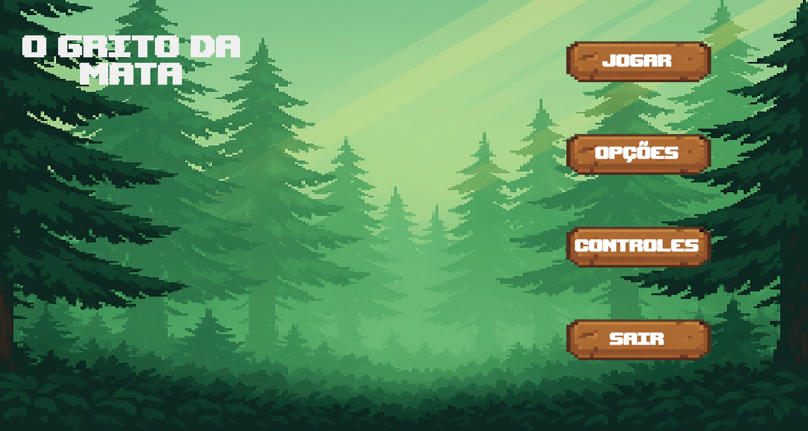
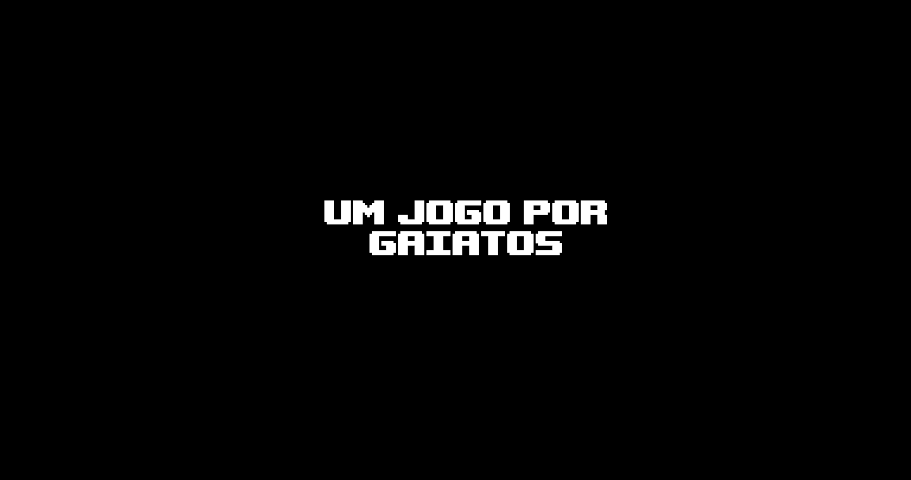

A história? Bom...
Um grupo de jovens, movido pela curiosidade e desejo de aventura, adentra a lendária Floresta Sombria, onde um deles, Wladson, desaparece misteriosamente, sendo aos poucos apagado da memória dos amigos. Através de sonhos perturbadores, eles percebem que algo está errado e retornam à floresta, resgatando Wladson, apenas para descobrir que o mundo em que vivem não é real, mas uma cópia distorcida criada por um monstro dos sonhos que se alimenta do medo e da dúvida. Presos em um simulacro hostil, os amigos passam a ser caçados por essa criatura enquanto tentam sobreviver a um ambiente que se corrompe cada vez mais. Guiados por anotações deixadas por uma vítima anterior, eles descobrem que a única forma de escapar é voltar à origem do pesadelo, reunir pistas espalhadas como um quebra-cabeça e enfrentar a entidade para resgatar o verdadeiro Wladson. Unidos pela amizade e pela coragem, os jovens enfrentam seus próprios medos na tentativa de destruir o monstro e libertar-se definitivamente do mundo dos pesadelos.

Características
Um jogo Roguelike;
Total em pixel art;
Perfeito para fãs de jogos roguelikes frenéticos;
Inspirado em Soul Knight e The binding of isaac;
Com ambientação de uma floresta sombria;
Realidade simulada;

Tem coragem?
Entre em uma floresta onde nada é o que parece e o medo adora pregar peças. Viva uma aventura cheia de mistérios, perseguições e quebra-cabeças desafiadores, enquanto você tenta escapar de um mundo de pesadelos que se molda aos seus medos. Explore, sobreviva e descubra a verdade por trás do desaparecimento de Wladson — mas cuidado: a floresta não perdoa distraídos. Um jogo para gaiatos, ou para quem acha que tem coragem suficiente para encarar o desconhecido.